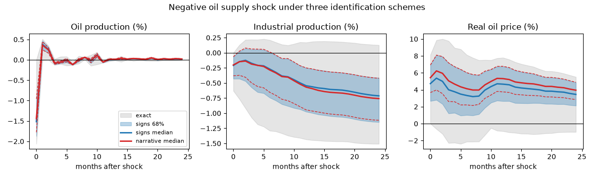

Note
Go to the end to download the full example code.
Oil supply and demand shocks: sign, narrative and set identification#
Kilian (2009) decomposes oil price movements into three shocks – oil supply, aggregate demand, and oil-specific demand – in a monthly VAR of oil production, real activity and the real oil price. Recursive identification works there only because of a strong assumption about supply’s within-month inelasticity; sign restrictions (Kilian and Murphy 2012) replace it with the qualitative content of the economics: a negative supply shock lowers production and activity and raises the price; an aggregate demand shock raises all three; an oil-specific demand shock raises production and price but lowers activity.
This example runs that scheme three ways and compares what each delivers. Plain sign restrictions give an identified set summarized by quantiles of accepted draws. Narrative restrictions (Antolin-Diaz and Rubio-Ramirez 2018) add the historical fact that the August 1990 invasion of Kuwait was a negative supply shock, and shrink the set. The exact bounds of Giacomini and Kitagawa (2021) show, for the supply shock alone, how wide the set really is, independently of the prior the random rotations impose on it.
The data are U.S. series only: U.S. field production of crude oil stands in for world production, and industrial production for the global activity index. Both substitutions matter and the closing section says how.
Data#
Monthly, 1973 to 2019: U.S. crude production in thousand barrels per day, industrial production, the WTI spot price and the CPI. Production enters as the percent change, activity as 100 times its log, and the price as 100 times the log of WTI deflated by the CPI.
import matplotlib.pyplot as plt
import numpy as np
from cultivars.exceptions import SpecificationError
from cultivars.multivariate.reduced_form.vector_autoregression import VAR
from cultivars.multivariate.structural.set_identification import SetIdentifiedSVAR
from cultivars.multivariate.structural.sign_restrictions import (
NarrativeSignRestrictedSVAR,
SignRestrictedSVAR,
)
from _fred import fetch
raw = fetch(
{"prod": "IPG211111CS", "ip": "INDPRO", "wti": "WTISPLC", "cpi": "CPIAUCSL"},
start="1972-12-01",
end="2019-12-01",
)
data = raw[["prod"]].copy()
data["prod"] = 100.0 * np.log(raw["prod"]).diff()
data["act"] = 100.0 * np.log(raw["ip"])
data["rpo"] = 100.0 * np.log(raw["wti"] / raw["cpi"])
data = data.dropna()
names = ("prod", "act", "rpo")
print(data.describe().round(2))
prod act rpo
count 564.00 564.00 564.00
mean 0.05 427.45 -154.56
std 2.12 29.89 46.28
min -23.95 368.95 -267.93
25% -0.72 399.91 -190.16
50% -0.01 432.35 -154.70
75% 0.87 456.28 -117.94
max 17.13 464.54 -48.47
Reduced form#
Kilian uses 24 lags to let the slow adjustment of production through. Twelve is enough for the point of this example and keeps the rotation search fast; the portmanteau test says whether it is too few.
order = 12
var = VAR(data.to_numpy(), order=order, names=names).fit()
print(var.residual_diagnostics(portmanteau_lags=24, arch_lags=12))
Residual diagnostics
================================================================================
Observations: 552 Equations: 3
--------------------------------------------------------------------------------
test statistic df p-value
portmanteau(24) 100.127 105 0.6162
jarque-bera[prod] 106682.476 2 0.0000
jarque-bera[act] 434.277 2 0.0000
jarque-bera[rpo] 8651.736 2 0.0000
arch-lm(12)[prod] 6.293 12 0.9006
arch-lm(12)[act] 17.981 12 0.1163
arch-lm(12)[rpo] 40.058 12 0.0001
================================================================================
Small p-values reject the null named by each test. A rejected portmanteau means
the lag order is too short, which invalidates every other quantity the result
reports.
Sign restrictions#
The restriction table names the three shocks and the sign of each variable’s impact response. The signs are imposed at horizons 0 and 1, so a draw must satisfy them for two months. The identified set is summarized by the 16th, 50th and 84th percentiles of the accepted draws at each horizon.
signs = {
"supply": {"prod": "-", "act": "-", "rpo": "+"},
"agg_demand": {"prod": "+", "act": "+", "rpo": "+"},
"oil_demand": {"prod": "+", "act": "-", "rpo": "+"},
}
sign_set = SignRestrictedSVAR(var, signs, horizons=(0,), draws=500, seed=3).identify()
print(sign_set.summary())
print(f"Acceptance rate {100 * sign_set.acceptance_rate:.2f}% over {sign_set.attempts} rotations")
horizon = 24
bands = sign_set.irf(horizon, quantiles=(0.16, 0.5, 0.84), cumulative=False)
Sign-Restricted SVAR (identified set)
================================================================================
Scheme: sign restrictions Accepted: 500
Requested: 500 Draws: 9225
Acceptance rate: 5.42% Horizons: 0
Variables: 3 Observations: 552
================================================================================
Declared signs, holding at horizons (0,): supply: prod -, act -, rpo +;
agg_demand: prod +, act +, rpo +; oil_demand: prod +, act -, rpo +. Rotations
were drawn at the reduced-form point estimate, so the set reflects
identification uncertainty only.
Shocks are normalized to unit variance, so impact-column entries are responses
to a one-standard-deviation structural shock.
Bands are pointwise quantiles across the accepted rotations. No single
structural model traces the median band: at each horizon the quantile may come
from a different rotation, which is the Fry-Pagan critique, and the honest
reading is as a summary of the identified set rather than as the impulse
response of a representative model.
Acceptance rate 5.42% over 9225 rotations
Narrative restriction#
The invasion of Kuwait on 2 August 1990 took Iraqi and Kuwaiti output
off the market. Antolin-Diaz and Rubio-Ramirez impose two facts about
that month: the supply shock was negative – which in the convention
above means a positive value of the shock labelled supply, since
that shock is defined as a production cut – and it was the most
important contributor to the unexpected movement in production. Events
are indexed on the effective sample, after the lags.
Narrative events can contradict the data at a given reduced form, in which case no rotation survives and the model refuses rather than returning an empty set. The attempt budget bounds the search; the fallback below keeps the example running so the comparison can still be drawn from the plain sign-restricted set.
dates = data.index[order:]
event = int(np.flatnonzero(dates == "1990-08-01")[0])
try:
narrative = NarrativeSignRestrictedSVAR(
var,
signs,
shock_signs=[("supply", event, "+")],
contributions=[("supply", "prod", event, "most")],
horizons=(0,),
draws=300,
max_attempts=150_000,
seed=3,
).identify()
except SpecificationError as refusal:
print(f"Narrative identification refused: {refusal}")
narrative_label = "narrative (refused; signs only)"
narrative_bands = bands
else:
print(narrative.summary())
print(
f"Acceptance rate {100 * narrative.acceptance_rate:.2f}% "
f"over {narrative.attempts} rotations"
)
narrative_label = "narrative median"
narrative_bands = narrative.irf(horizon, quantiles=(0.16, 0.5, 0.84))
Sign-Restricted SVAR (identified set)
================================================================================
Scheme: sign restrictions Accepted: 300
Requested: 300 Draws: 10981
Acceptance rate: 2.73% Horizons: 0
Variables: 3 Observations: 552
================================================================================
Traditional signs at horizons (0,): supply: prod -, act -, rpo +; agg_demand:
prod +, act +, rpo +; oil_demand: prod +, act -, rpo +. Narrative events,
indexed to the effective sample: supply shock + in period 199; supply the most
contributor to prod in period 199. Narrative events were checked against the
point-estimate residuals: the set is the rotations consistent with the declared
signs and the declared history at this reduced form. The Antolin-Diaz and Rubio-
Ramirez importance weighting, which propagates narrative information into the
reduced-form posterior, belongs to the posterior-draw version that arrives with
the sampling backend.
Shocks are normalized to unit variance, so impact-column entries are responses
to a one-standard-deviation structural shock.
Bands are pointwise quantiles across the accepted rotations. No single
structural model traces the median band: at each horizon the quantile may come
from a different rotation, which is the Fry-Pagan critique, and the honest
reading is as a summary of the identified set rather than as the impulse
response of a representative model.
Acceptance rate 2.73% over 10981 rotations
Exact bounds for the supply shock#
Giacomini and Kitagawa’s bounds are the extreme responses over every rotation satisfying the supply-shock signs, computed exactly rather than by sampling. They are what the restrictions alone imply; the distance between them and the sign-restricted quantile bands is the contribution of the uniform prior over rotations.
bounds = SetIdentifiedSVAR(var, signs["supply"], shock="supply", horizons=(0,)).identify()
print(bounds.summary())
exact = bounds.irf(horizon)
Set-Identified SVAR ('supply' shock)
================================================================================
Scheme: set identification Restricted shock: supply
Sign horizons: 0 Variables: 3
Observations: 552
--------------------------------------------------------------------------------
impact of supply lower upper
prod -2.0607 0.0000
act -0.6305 0.0000
rpo -0.0000 8.1364
================================================================================
Declared signs on the 'supply' shock, holding at horizons (0,): prod -, act -,
rpo +. Every other shock is left entirely unrestricted.
Shocks are normalized to unit variance, so impact-column entries are responses
to a one-standard-deviation structural shock.
Bounds are the exact endpoints of the identified set, computed pointwise per
response and horizon: they depend on no prior over rotations, which is what
separates them from the quantile bands of a sign-restricted set -- those inherit
the uniform prior over the admissible rotations, the Baumeister-Hamilton
critique. Read the bounds pointwise: the set of admissible impulse-response
paths is not the box they outline. Computed at the reduced-form point estimate;
the robust Bayesian treatment, which repeats these bounds across posterior
draws, arrives with the sampling backend.
Responses to a negative oil supply shock#
Three readings of the same shock: the quantile band of the sign-restricted set, the narrower band once the Kuwait event is imposed, and the exact envelope of everything the signs allow.
labels = {
"prod": "Oil production (%)",
"act": "Industrial production (%)",
"rpo": "Real oil price (%)",
}
steps = np.arange(horizon + 1)
fig, axes = plt.subplots(1, 3, figsize=(12, 3.6))
supply = list(sign_set.shock_names).index("supply")
for i, (ax, name) in enumerate(zip(axes, names, strict=True)):
lower, upper = bands[0, :, i, supply], bands[2, :, i, supply]
ax.fill_between(steps, exact[:, i, 0], exact[:, i, 1], color="grey", alpha=0.2, label="exact")
ax.fill_between(steps, lower, upper, color="C0", alpha=0.3, label="signs 68%")
ax.plot(steps, bands[1, :, i, supply], color="C0", lw=2, label="signs median")
ax.plot(steps, narrative_bands[1, :, i, supply], color="C3", lw=2, label=narrative_label)
ax.plot(steps, narrative_bands[0, :, i, supply], color="C3", lw=1, ls="--")
ax.plot(steps, narrative_bands[2, :, i, supply], color="C3", lw=1, ls="--")
ax.axhline(0.0, color="k", lw=0.8)
ax.set_title(labels[name])
ax.set_xlabel("months after shock")
axes[0].legend(fontsize=8, loc="lower right")
fig.suptitle("Negative oil supply shock under three identification schemes")
fig.tight_layout()

What to take away#
The sign-restricted band is not a confidence band: its width mixes sampling uncertainty about the reduced form, which it ignores, with identification uncertainty, which it summarizes under one particular prior. The exact bounds strip the prior out and are usually uncomfortably wide. Narrative restrictions are the cheapest way to narrow them, and the acceptance rates printed above say how much of the identified set a single historical fact removes.
The two data substitutions are not innocent. U.S. production is a small and, after 2010, structurally different share of world supply, and industrial production is a poor proxy for the global activity index Kilian builds from shipping freight rates. Replicating the paper properly needs the global series, which are not on FRED; the point of this example is the identification workflow, not the point estimates.